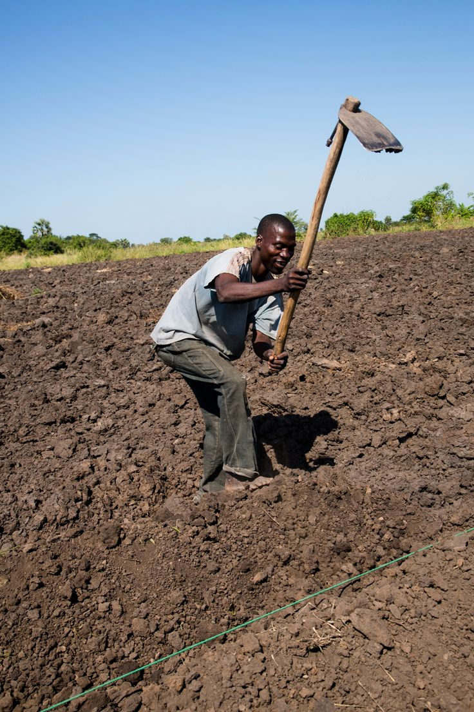
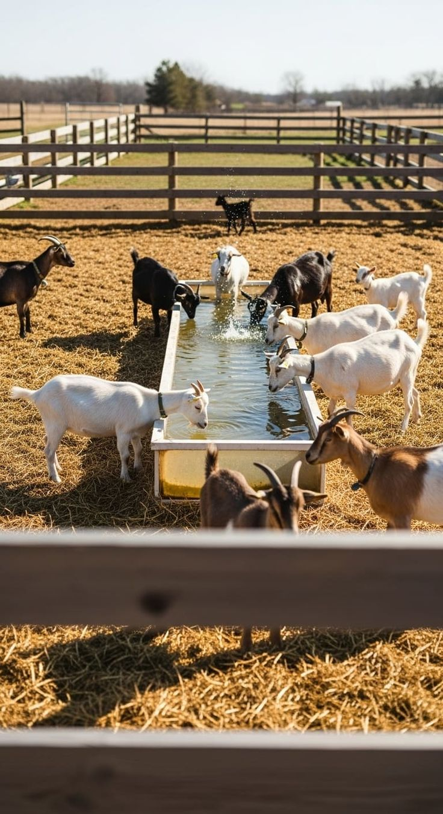
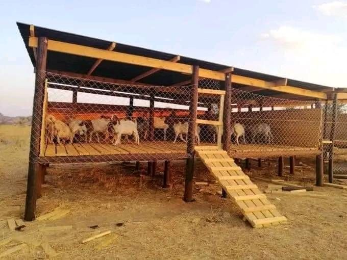

Operating from our 101-hectare base in Darwendale, Jovotech is empowering Zimbabwean farmers with sustainable livestock and high-impact agribusiness models.
"Empowering Farmers. Building Value Chains. Creating Opportunities."
The Rural Enterprise Growth & Market Access Programme (REGMAP) is Jovotech Investments’ flagship initiative to transform smallholder farming into commercially viable enterprises. REGMAP integrates inputs, training, finance access, market linkages, and technical support to ensure farmers not only produce but also profit.
Our first project focuses on commercial rabbit production, selected for rapid reproduction cycles, low initial investment, and strong market demand. This provides a practical entry point for farmers to build capacity, income, and enterprise knowledge.

Jovotech’s REGMAP rabbit value chain is designed for rapid growth and high returns. Rabbits reach reproductive maturity in 4–5 months, offering quick turnover.
Meat, live kits, manure, and by-products for feed or organic fertiliser.
Predictable and recurring revenue from domestic and export markets (Regional & UAE). Strong ROI due to low input costs.
Join REGMAP and turn your small farm into a profitable business.
Contact Jovotech or your regional coordinator.
Get your starter kit, training, and guidance.
Rabbits ready for sale or reproduction in 4-5 months.
Expand into other crops and livestock.
We focus on high-yield, sustainable models that work for both small-scale and commercial farmers.
Focusing on high-impact value chains. We support farmers in producing high-quality turmeric for local and international health and spice industries.
Tapping into the global industrial hemp market for fiber, oil, and medicinal applications through regulated and high-standard farming.
Modern poultry systems designed for maximum efficiency and food security, supporting both broiler and egg production networks.
Jovotech is establishing state-of-the-art processing hubs in Darwendale to add value to local produce and meet international export standards.
Our 101-hectare base serves as the central point for logistics, quality control, and farmer support, ensuring that every harvest reaches its full market potential.
We work with international partners to ensure Zimbabwean produce meets global safety and quality certifications.


Jovo Tech is committed to empowering women through targeted mentorship programs and structured contract farming models. Deadline for next intake: Saturday.
Targeted girls mentorship courses focusing on agribusiness management and leadership.
We handle all procurement, logistics, and management, putting farmers in a position to secure loans and succeed.